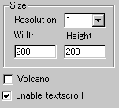
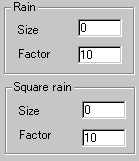
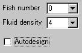

|
This applet simulates vertical fluid animation.
[For more technical
information about the available parameters, click here.]
Most parameters are self-explanatory and you can
always see brief description of each parameter by moving the mouse
pointer over the wizard.
 |
First of all, define the applet size and the
resolution value at "Width", "Height",
"Resolution". Resolution stretches the internally
calculated image to the applet size by a selected zooming
value. So, always use 1 (no zooming), if you want a high quality
image.
|
|
Then you decide if textscroll function is
enabled by checking "Enable textscroll" box.
Now, let's turn to actual effects. There's
a volcanic eruption effect available at "Volcano"
parameter. Check it if you want the effect.
|
 |
Next, there are two kinds of rain
effects, square rain and spherical rain for which
you set up drop size and rain timing. The difference
between the two rains is simple in that each initial wave forms
either square or sphere and both then spread spherically. So,
only at the time a drop reaches the liquid surface, the difference
appears. |
 |
You can set the number
of fishes crossing across the surface at "Fish number" |
Next, select the fluid density number which
controls how "deeply" the liquid surface behaves. Lower
values for this parameter cause quicker decay of waving.
Finally, if you want to see automatic fluid animation,
choose "Autodesign". This will randomly control the effect
on the whole.
Proceed to the textscroll
menu if you have checked the textscroll box; otherwise go to
the expert menu.
|